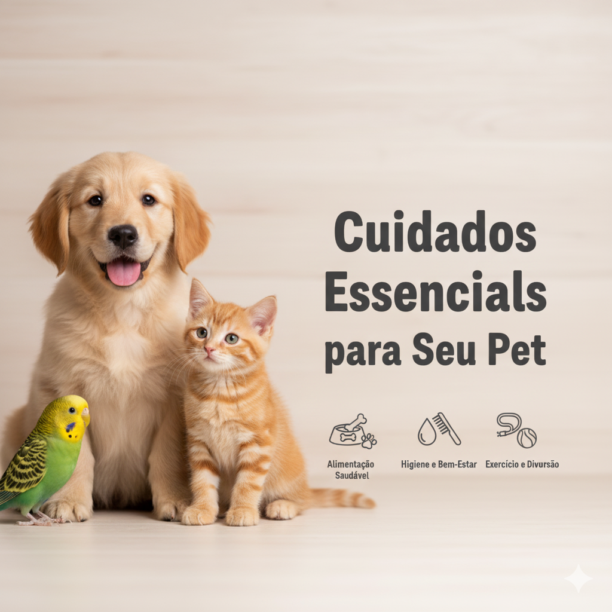

Dicas de Cuidados Essenciais
Saúde e Bem-Estar
- Alimentação: Ofereça ração de qualidade e água fresca sempre.
- Veterinário: Visitas anuais são essenciais para vacinas e check-ups.
- Castração: É um ato de amor que previne doenças e superpopulação.
- Higiene: Mantenha pelos, unhas e dentes sempre bem cuidados.
- Exercícios: Passeios e brincadeiras são fundamentais para a saúde física e mental.